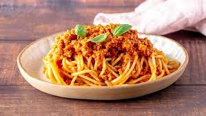

Spaghetti ragu veg
Ingredienti
- Spaghetti 300g
- Olio q.b
- Scalogno e/o cipolla di tropea
- Ragù veg mutti o biffi
Preparazione:
- Riempire pentola con 3L di acqua e mettere sulla piastra a velocità 7.
- Prendere padella scladarci olio e cipolla fino a soffriggere.
- Versare ragu veg nella padella e lasciare avelocità 5 per 5 min.
- Appena acqua bolle buttare spaghetti e scolare al dente.
- Saltare gli spaghetti in padella col ragù per 3 min, servire!!